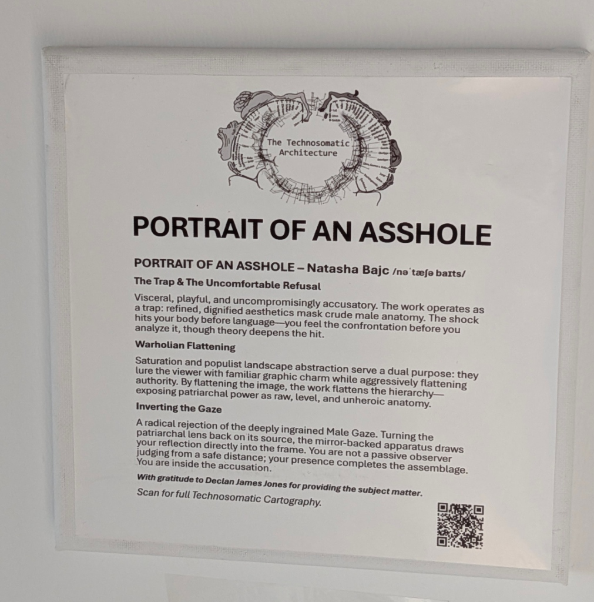
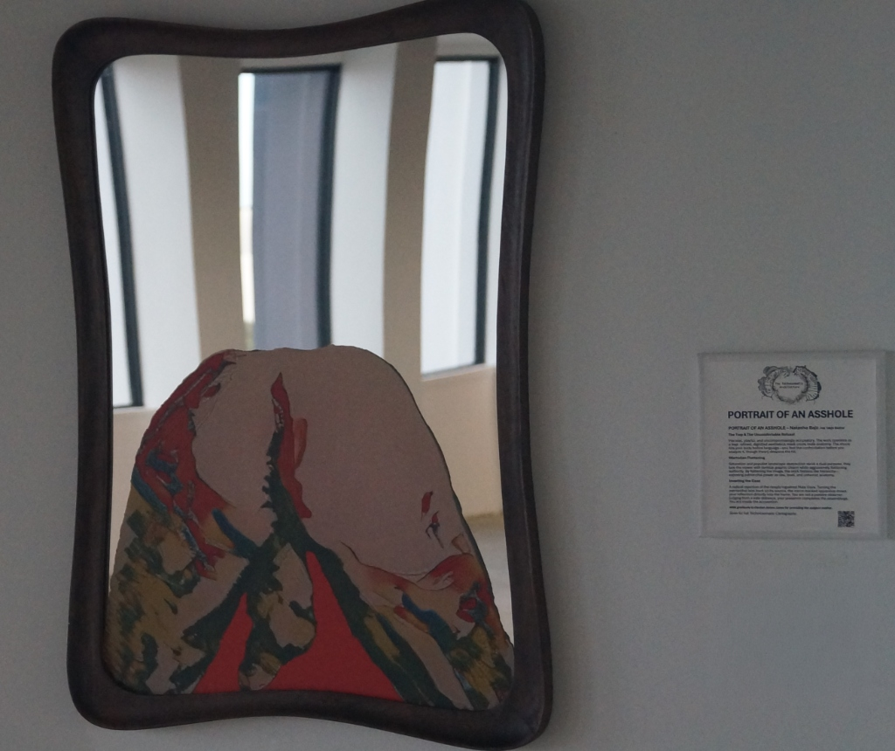
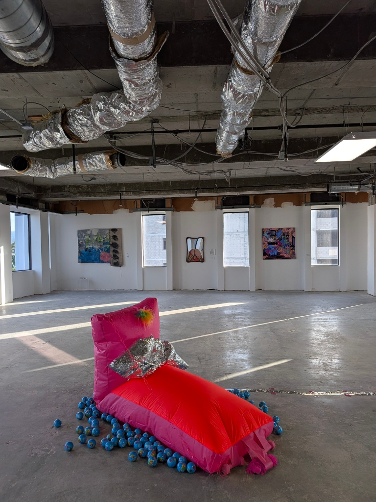
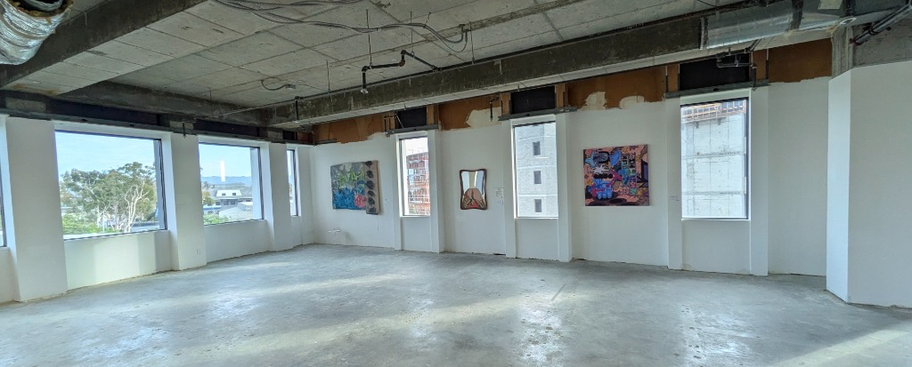

Portrait of an Asshole
Bajc's practice investigates the Technosomatic body—the site where embodied flesh encounters digital systems, aesthetic translation, and institutional legitimacy. In Portrait of an Asshole, this inquiry takes a deceptively simple form: refined abstraction masking crude anatomical literalism, doubled through mirror reflection.
Ideology and the Obscene
The work operates through Žižekian complicity. What appears at distance as a Warhol-saturated landscape portrait—high-art rendered in dignified color and formal refinement—resolves upon recognition into refined male genitalia: balls, shaft, asshole. The aesthetic camouflage is the point. Institutional language (saturation, abstraction, portraiture convention) legitimizes crude content. Viewers initially consent to looking at something serious. Recognition arrives as accusation.
But the work does not ask for passive critique. The mirror forces active complicity. Žižek argued that ideology works not through conscious belief but through material practice—what we do, not what we claim to think. Here, the mirror apparatus makes that visible. Your reflection positions you as the anatomical subject, not as external observer. You cannot stand outside the accusation. The title completes the trap: you are this asshole.
The Technosomatic Translation
Bajc's Technosomatic framework posits the body as a site of continuous translation through technological and aesthetic systems. In this work, the male body (specifically its organs of production and waste) passes through landscape abstraction—a system of representation that obscures even as it beautifies. Deleuze's notion of the Body without Organs becomes legible here: the body is unmade and remade through machinic desire, through systems (aesthetic, institutional, reflective) that extract, refine, and reposition it.
The mirror is not neutral technology. It is an apparatus of recognition and complicity. Deleuze understood the machine not as external tool but as constitutive of desire itself—we become what systems make us see. The mirror-on-acrylic-on-wall is a machinic assemblage that transforms viewer into subject, observation into participation.
The Unthought Known
Bollas's concept of the unthought known describes knowledge that exists affectively before conscious articulation—the bodily recognition that precedes language. Viewers experience this when the abstraction resolves into anatomy. The shock is not intellectual; it arrives in the body first. We know before we think. The title then names what was already felt.
This is where Bajc's practice refuses easy resolution. The work does not require theoretical literacy to function, but it deepens through it. The visceral recognition (unthought) meets the theoretical frame (thought) meets the mirror (complicity). None of these layers cancels the others.
Feminist Refusal
Where traditional portrait practice has rendered the male body as authority, achievement, or desire-object, Portrait of an Asshole renders it as anatomy—stripped of heroic pretense, forced into complicity with its own crudity. This is not misandry as aesthetics; it is structural refusal. The male body is not celebrated or mourned. It is implicated. The viewer becomes implicated alongside it.
Bajc's Technosomatic Cyberfeminism 2.0 rejects the fantasy that critique can maintain critical distance. You are not invited to judge the work or its subject. You are positioned within it.
Execution as Theory
The mirror backing, the saturation, the portrait scale, the die-cut silhouette—none of these are formal choices only. They are theoretical moves. Precision in execution is not decoration; it is refusal to let viewers dismiss the work as crude or unserious. The work insists on being taken seriously precisely by forcing complicity.
"Hang it. Look at it. See yourself in it. That is not invitation; it is apparatus."
Spatial Installation & Exhibition Documentation
Documentation of physical mirror apparatus, wall canvas plaque, and spatial context in gallery environment.



